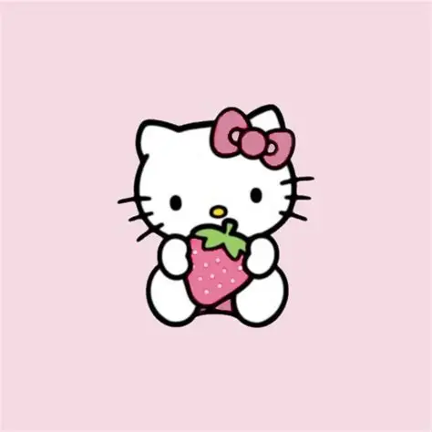

Bem-vindo(a/e) ao site da HelloKitty!!!
Aqui você vai descobrir curiosidades interessantes sobre a nossa menina-gato com mais de 50 anos!
Velha não é mesmo? mas nem tanto! Veja a seguir curiosidades sobre ela:

- Seu nome verdadeiro é Kitty White!
- Ela foi criada pela Sanrio em 1974!
- Sua história real conta que ela nasceu em Londres! na Inglaterra.
- Ela não é um gato! A sanrio apresenta HelloKitty como uma garotinha! apesar de sua aparência felina!
- Tem uma irmã gêmea chamada Mimmy, que usa um laço amarelo na orelha direita contrária de sua irmã!
- Sua comida favorita é torta de maçã!
- Sua altura na vida real é equivalente a 5 maçãs uma em cima da outra!
- Seu sucesso é mundial! tendo seus produtos comercializados em cerca de 130 países!
Para mais informações não deixe de se cadastrar!
Fique por dentro das novidades do mundo HelloKitty! Acesse nosso Sobre para saber mais!